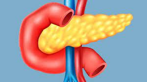

| Opinión | |
| Yo opino que debido a que la tecnología cada vez más avanza con los años, esta debe de ser utilizada y aprovechada para cosas buenas como la salud de las personas. Estos avances en la medicina benefician mucho a las personas enfermas que buscan solución a sus problemas, aunque esto sea una solución temporal igual ayuda mucho actualmente y en futuro la fabricación de órganos será una solución permanente. |  |